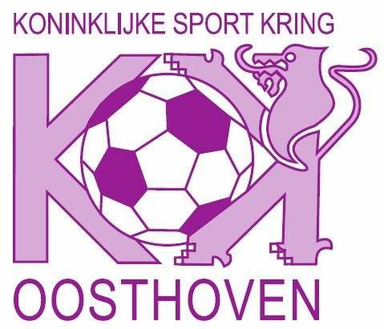

Eén van mijn hobby’s is de jeugdbeweging Jeugd Rode Kruis (JRK). Het JRK bestaat al van 1923. Het is een
jeugdbeweging waarbij er op zaterdagavond tussen 18.00u en 20.00u toffe activiteiten worden gegeven aan
iedereen tussen 6 en 16 jaar. Je hoeft geen lid te worden of ook geen uniform aan te kopen. Het JRK is
bovendien helemaal gratis. Wij hebben ook een groot kamp en dat is het EHBO-kamp. Het is een kamp met
activiteiten zoals bij een jeugdbeweging maar een heel groot pluspunt is dat er tussen elke activiteit een
EHBO-les wordt voorzien. Plezier maken en toch heel nuttige dingen leren. Wij zijn geen bekende
jeugdbeweging, en moeten steeds meer moeite doen om nieuwe leden te vinden. Dit probleem komt helaas ook
voor bij andere jeugdbewegingen. Ik ben al vanaf mijn 11 jaar lid bij deze jeugdbeweging. Ik zelf ben nu
hoofdverantwoordelijke van deze jeugdbeweging. Ik vond het als lid altijd heel tof om te gaan en de kampen
mee te doen. Altijd met mijn vrienden ravotten en spelen. Nu vind ik het supertof om leider te zijn. Ik
probeer altijd de gekste dingen te bedenken om onze leden te amuseren. Ook gaan we enkele keren per jaar op
weekend; leidingsweekend, juniorenweekend en het weekend voor alle leden.
Gamen
Ik ben in mijn vrije tijd veel bezig met mijn computer en mijn PlayStation. Op mijn PlayStation speel ik
altijd met mijn vrienden. Ik vind dit heel leuk omdat dit mij tot rust brengt als ik een drukke dag heb
gehad. En als ik op mijn laptop bezig ben is het meestal voor schoolwerk. Maar ook als ik een spel wil
spelen op men laptop. Ik speel verschillende soorten spelletjes. Dat varieert altijd.
Voetballen
Mijn andere hobby is voetballen. Ik doe dit nu nog af en toe bij de voetbalclub KSK Oosthoven. Dat is in
Oud-Turnhout. In 1930 was er al sprake van deze voetbalclub. Ik ben hier al heel vroeg mee begonnen. Mijn
broer, die 1 jaar ouder is begon met voetballen en ik vond dat zo leuk dat ik ook wilde gaan. Ik was
eigenlijk nog een jaartje te klein, maar mocht toch meespelen in het ploegje met mijn broer en andere
vrienden. Ik heb er meer dan 10 jaar bij de jeugd gevoetbald. Elke week 2 keer trainen en dan nog een match
spelen in het weekend. Waarom Oosthoven en niet Kasterlee? Mijn grootvader en vader hebben altijd bij deze
club gespeeld. Ook al mijn vrienden van school speelden bij deze club.

Sporten
Ik ga vanaf mijn 19 jaar naar de fitness. Ik doe dit vooral met mijn vrienden, maar ook soms alleen. Ik ga
naar de Basic Fit in Turnhout. Lopen doe ik ook veel in mijn vrije tijd. Een weetje waar ik fier op ben: ik
heb al 2 keer deel genomen aan de 10 Miles van Antwerpen. En ik heb deze telkens uitgelopen binnen een mooie
tijd.
De 10 Miles van Antwerpen is een beroemde hardloopwedstrijd in Antwerpen, België. Dit evenement wordt
jaarlijks georganiseerd en trekt duizenden deelnemers van over de hele wereld. De 10 Miles verwijst naar de
afstand van de wedstrijd, die ongeveer 16,1 kilometer bedraagt.
Mijn interesse
Mijn interesses liggen vooral bij mijn hobby’s, daar ben ik ook het meeste mee bezig doorheen de dag. Toch
heb ik nog een heel belangrijke interesse en dat is tijd doorbrengen met mijn vrienden en vriendin. In het
weekend ben ik altijd op stap met mijn vrienden en vriendin. Het maakt niets uit wat we gaan doen, het is
altijd leuk. In mijn vrije tijd kijk ik veel naar soaps, dat vind ik geweldig.